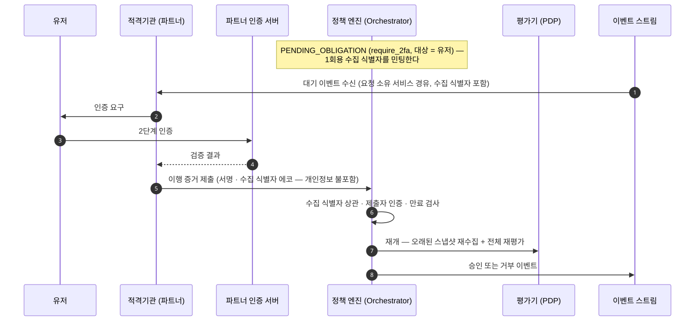

obligation 수집
obligation은 통과로 확정되기 전에 이행해야 하는 조건입니다(자세히). 이 페이지는 그 이행을 어느 채널에서 모으고, 모으는 동안 요청이 어디에 머무는지를 씁니다.
obligation은 **“통과시키되 이것을 이행하라”**는 요구입니다. 이행이 끝날 때까지 요청은
PENDING_OBLIGATION에 머뭅니다.
셋의 수집 채널이 다릅니다
타입은 커널이 고정한 어휘 셋입니다. 저작자가 새 타입을 만들 수 없습니다. 타입마다 이행을 모으는 코드가 실제로 있어야 하기 때문입니다.
| 타입 | 누가 검증하나 | 어디로 들어오나 | 구현 상태 |
|---|---|---|---|
require_2fa (어드민) |
정책 엔진 | 어드민 표면의 챌린지 검증 | 이행을 기록하는 경로가 없습니다 |
require_2fa (유저) |
파트너 인증 서버 | 파트너의 서명된 이행 증거 | 증거를 접수하는 엔드포인트가 없습니다 |
require_quorum |
정책 엔진 | 어드민 표면의 표 접수 | 이행 기록 경로가 있습니다 |
attach_travel_rule_payload |
트래블룰 게이트웨이 | 별도 제출 없이 소스 재수집 | 타입 값만 있습니다 |
표의 「표면」은 계약 소유자와 인증 방식이 하나로 정해지는 API 경로 묶음입니다(자세히).
같은 require_2fa인데 채널이 갈립니다. 요청자가 어드민이면 정책 엔진에 자격증명이 있고
유저면 없기 때문입니다.
이행 경로가 코드로 있는 타입은 정족수 하나입니다
이 페이지의 나머지는 설계입니다. 넷 중 이행이 실제로 기록되는 것은 require_quorum이고, 그
기록은 표 집계가 승인에 필요한 최소 인원인 정족수의 충족을 판정할 때 일어납니다. 나머지 셋에는 그
기록을 만드는 코드가 없습니다.
require_2fa(어드민): 어드민 표면의 챌린지 검증은 있으나 그 결과를 obligation 이행으로 기록하지 않습니다. 정족수와 함께 부과되면 정족수만 이행되고 요청은 2단계 인증 데드라인에서 만료됩니다. 그 데드라인의 기본값은 5분입니다.require_2fa(유저): 파트너가 부르는 제출 엔드포인트는 PIP 결과 수집으로만 갑니다. 이행 증거를 받는 엔드포인트가 따로 없습니다.attach_travel_rule_payload: 타입 값은 커널 어휘에 있으나 데드라인 기본값이 선언돼 있지 않습니다. 부과되면 데드라인을 만들지 못해 그 시점에 요청이FAILED로 종결합니다. 재수집 대상인 트래블룰 소스도 선언되지 않았습니다.
그 앞에 obligation을 부과하는 절차 자체가 지금 없습니다. obligation을 다는 룰은 저작 세트의 어드민 쪽에만 있고, 어드민 액션을 판단 요청으로 접수하는 표면이 아직 없습니다(승인 게이트). 값 이동 세 모듈의 allow 룰에는 obligation이 없습니다.
유저의 2단계 인증은 정책 엔진이 검증하지 않습니다
유저 대면 표면과 인증 수단은 파트너 쪽에 있습니다. 정책 엔진에는 유저의 팩터가 등록돼 있지 않습니다.
그래서 검증은 파트너가 하고 엔진은 이행 증거를 접수합니다. 수단을 특정하지도 않습니다. 2단계 인증이든 FIDO든 파트너가 자기 최고 보안 존에서 고릅니다.
유저 2단계 인증의 흐름
아래는 설계 흐름입니다. 6번 단계의 제출을 받는 엔드포인트가 아직 없어 이 흐름은 지금 성립하지 않습니다.
다이어그램의 배역은 여섯입니다.
- 유저: 파트너사 서비스의 최종 사용자입니다
- 적격기관 (파트너): 유저 대면 표면을 갖고 이행 증거를 엔진에 제출하는 쪽입니다
- 파트너 인증 서버: 파트너사가 운영하는 인증 수단의 검증 서버입니다
- 정책 엔진 (Orchestrator): 판단 요청을 접수하고 입력 문서를 조립하고 PIP 수집과 obligation 루프를 조율하는 정책 엔진의 앞단입니다. 판정 자체는 하지 않습니다
- 평가기 (PDP): 완성된 입력 문서를 평가해 결정을 내는 역할입니다. 밖을 부르지 않습니다
- 이벤트 스트림: 대기·승인·거부 이벤트가 흐르는 채널입니다

제출 계약은 PIP와 같은 것을 씁니다
이행 증거를 위한 별도 프로토콜을 만들지 않았습니다. 판단에 필요한 사실을 평가 시점에 읽어 오는 수집 경로인 PIP(자세히)에서 파트너가 데이터를 넣는 인바운드 계약을 그대로 씁니다.
그 계약을 공유한다는 것이 설계이고, 지금 그 엔드포인트가 받는 것은 PIP 결과 하나입니다. 제출을 이행 증거로 가르는 경로가 아직 없습니다.
서명과 1회용 수집 식별자, 도착 규칙이 전부 같습니다. 파트너 입장에서 “심사 결과를 보내는 것”과 “인증 결과를 보내는 것”이 같은 모양이라 붙일 것이 하나뿐입니다.
엔진의 결정 식별자는 파트너에게 노출하지 않습니다. 파트너가 쥐는 것은 그 건에만 유효한 수집 식별자 하나입니다.
트래블룰 이행은 증거를 받지 않습니다
attach_travel_rule_payload는 제출을 기다리지 않습니다. 트래블룰 소스를 다시 수집해 이행을
확인합니다. 트래블룰은 가상자산 이전 시 송·수신 정보를 사업자끼리 교환하는 규제
의무입니다(자세히).
첨부가 실제로 이루어졌는지는 그 소스의 스냅샷이 답합니다. 별도 증거를 받으면 소스와 증거가 갈리는 경우를 또 다뤄야 합니다.
이 재수집은 아직 코드가 아닙니다. 데드라인 기본값과 트래블룰 소스 선언이 둘 다 없어, 이 타입이
부과된 요청은 재수집에 닿기 전에 FAILED로 종결합니다.
어드민 쪽은 표와 챌린지로 모읍니다
정족수와 어드민 2단계 인증은 어드민 표면에서 받습니다. 표를 던질 때마다 건별 챌린지를 검증하는 스텝업을 함께 적용합니다.
그 스텝업은 표의 자격 검사이지 require_2fa의 이행이 아닙니다. 지금 이행으로 기록되는 것은
정족수 충족 하나입니다.
챌린지는 그 요청의 내용에 묶여 있습니다. 그래서 승인자가 본 것과 승인된 것이 같음이 보장되고, 다른 요청에 받은 응답을 재사용할 수 없습니다.
상세한 흐름은 승인 게이트에 있습니다.
이행이 끝나도 바로 통과가 아닙니다
증거가 다 모이면 재개합니다. 그때 오래된 스냅샷을 다시 읽고 전체를 재평가한 뒤에야 결과가 나옵니다.
최신 데이터가 앞선 승인 상태보다 우선합니다. 재평가가 거부를 내면 거부로 끝납니다. 기다리는 동안 주소가 회수됐거나 정책이 바뀌었으면 그 결과가 우선합니다.
대기 중에 정책이 바뀌었어도 옛 정책을 적용하지 않습니다. 재개 시점의 활성 정책으로 평가합니다.
재개는 별도 상태를 만들지 않습니다
재개는 EVALUATING으로 되돌아가는 것입니다. 재평가가 사실을 더 요구하면 다시 비동기 수집 대기로
내려가 같은 루프에 합류합니다.
재개 재평가도 평가 라운드를 하나 씁니다. 평가 라운드는 한 판단 요청 안에서 평가가 몇 번째로 실행됐는지입니다(자세히). 그래서 obligation과 수집 사이를 오가는 진동의 절대 상한이 라운드 상한입니다.
만료는 미이행 데드라인의 최솟값입니다
obligation마다 데드라인이 따로 있습니다. 대기 진입 시각에 타입별 TTL을 더해 고정되고, 개별 데드라인은 이후에 움직이지 않습니다.
요청의 만료 시각은 아직 이행되지 않은 것들의 최솟값입니다. 하나가 이행될 때마다 남은 것 기준으로 다시 계산되고, 하나라도 데드라인을 넘기면 요청 전체가 만료됩니다.
만료된 요청은 다시 진행되지 않습니다. 재시도는 처음부터이고 새 결정 식별자를 받습니다.